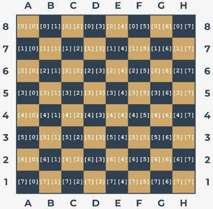

Уявіть список - не дуже довгий, не дуже складний, просто
звичайний список, що містить деякі цілі числа. Деякі з цих
чисел можуть повторюватись, і це ключ до розгадки. Ми не
хочемо повторень. Ми хочемо, щоб їх видалили.
Ваше завдання – написати програму, яка видаляє всі
дублікати чисел зі списку. Ціль полягає в тому, щоб
скласти список, в якому всі числа зустрічаються не більше
одного разу.
Примітка
припустимо, що вихідний список жорстко закодований
всередині коду - Вам не потрібно вводити його з
клавіатури. Звичайно, Ви можете покращити код і додати
частину, яка може вести діалог з користувачем і
отримувати від неї всі дані..
Підказка
ми рекомендуємо Вам створити новий список як тимчасову
робочу область - вам не потрібно оновлювати список in
situ.
Ми не надали тестових даних, оскільки було б надто
просто. Натомість ви можете використовувати наш
скелет.
Code
my_list = [1, 2, 4, 4, 1, 4, 2, 6, 2, 9]print(my_list)my_list =list(set(my_list))print("The list with unique elements only:")print(my_list)
[1, 2, 4, 4, 1, 4, 2, 6, 2, 9]
The list with unique elements only:
[1, 2, 4, 6, 9]
Багатовимірні списки. Генератори списків
Завдання 4
Погляньте на шахівницю. Кожне поле містить кілька
індексів, які необхідно вказати для доступу до вмісту
клітини:

Напишіть код, використовуючи генератори списків, який
створює матрицю 8х8 з пустими клітинками (пуста клітинка
задається як “_“) для задання шахівниці і розставте чотири
тури по кутках шахівниці